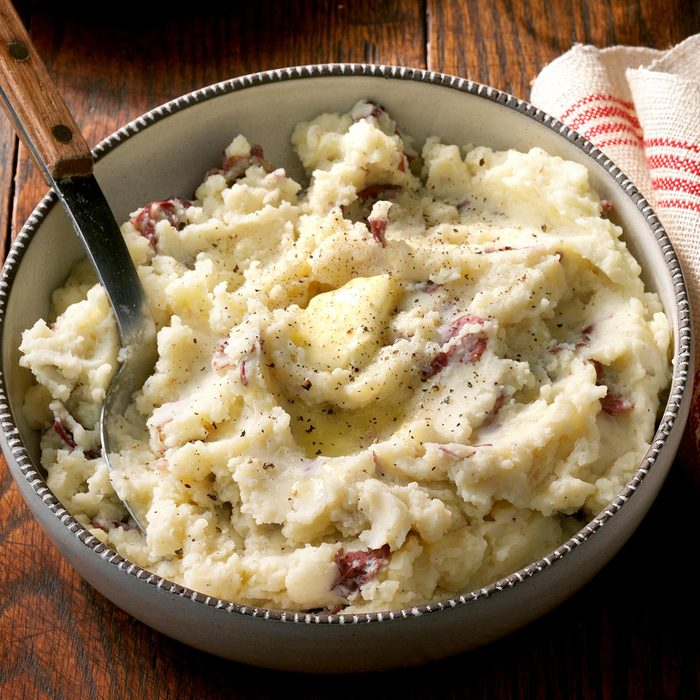

Smashed Potatoes

Description
"I wouldn't dream of making my favorite chicken recipe without making these potatoes, too."" —Jennifer
Shaw of Dorchester, Massachusetts.
Ingredients
- 2 pounds medium red potatoes (about 7), quartered
- 2 tablespoons butter
- 1/4 cup sour cream
- 1/4 cup 2% milk
- 1/4 teaspoon salt
- 1/4 teaspoon pepper
- Pinch ground nutmeg
Steps
- Place potatoes and water to cover in a large saucepan; bring to a boil. Reduce heat; cook, uncovered, until
tender, 10-15 minutes.
- Drain; return to pan. Mash potatoes to desired consistency; stir in remaining ingredients.